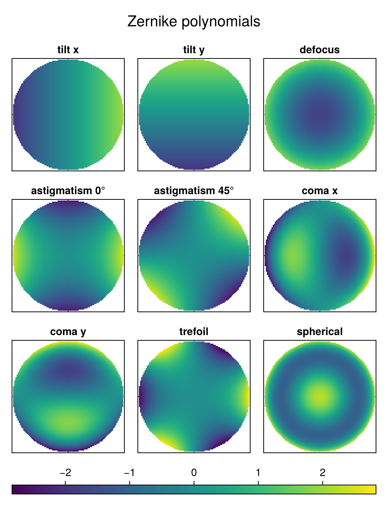
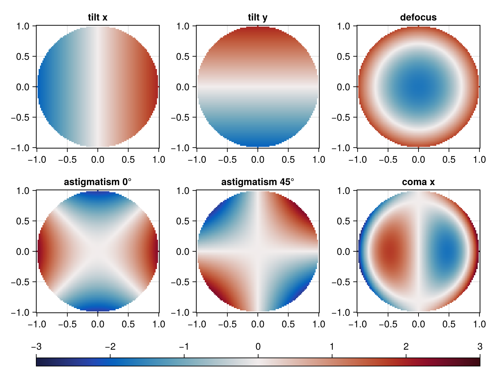
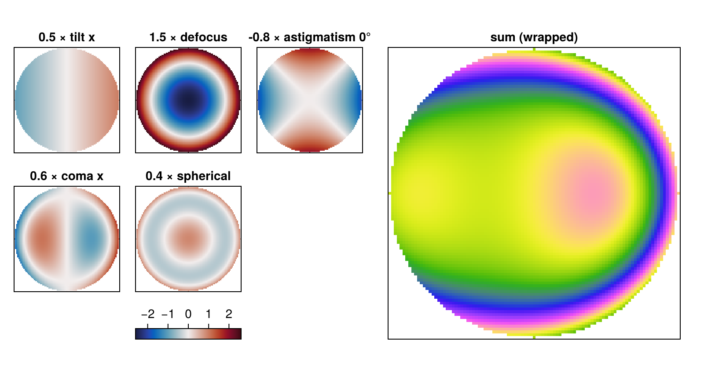

using PhasePlots
using CairoMakie
CairoMakie.activate!(; type="png")Tables of heatmaps
Often one needs to look at a whole set of 2D arrays at once: the modes of a basis, the influence functions of a deformable mirror, the iterations of an algorithm, a series of interferograms. To compare them, they should share one colour scale. plot_heatmaps_table arranges a vector of arrays in a grid with a common colorbar.
Some Zernike polynomials
As a test set, take a few low-order Zernike polynomials on the unit disk (written out explicitly here; the PhaseBases package provides them properly). The arrays are sampled as A[j, i] = f(x[i], y[j]), so frame=:domain is used below.
xr = range(-1, 1; length=101)
yr = xr
modes = [
"tilt x" => (x, y) -> 2x,
"tilt y" => (x, y) -> 2y,
"defocus" => (x, y) -> √3 * (2(x^2 + y^2) - 1),
"astigmatism 0°" => (x, y) -> √6 * (x^2 - y^2),
"astigmatism 45°" => (x, y) -> √6 * 2x * y,
"coma x" => (x, y) -> √8 * (3(x^2 + y^2) - 2) * x,
"coma y" => (x, y) -> √8 * (3(x^2 + y^2) - 2) * y,
"trefoil" => (x, y) -> √8 * (x^3 - 3x * y^2),
"spherical" => (x, y) -> √5 * (6(x^2 + y^2)^2 - 6(x^2 + y^2) + 1),
]
labels = first.(modes)
arrays = [[x^2 + y^2 <= 1 ? f(x, y) : NaN for y in yr, x in xr] for f in last.(modes)];A basic table
The number of columns is chosen automatically (close to a square grid) and the colour range covers all arrays (NaN values are ignored). titles labels the panels, title the whole table.
fig = plot_heatmaps_table(
arrays; titles=labels, title="Zernike polynomials", frame=:domain, hidedecorations=true
)
Layout, colours and coordinates
ncols, width and height set the grid and the size of each panel, colormap and limits the colour scale. With x and y the axes show the coordinates.
fig = plot_heatmaps_table(
arrays[1:6];
x=xr,
y=yr,
titles=labels[1:6],
ncols=3,
width=180,
height=180,
colormap=:balance,
limits=(-3, 3),
frame=:domain,
)
Inside a larger figure
plot_heatmaps_table! draws the table into a layout of an existing figure. Here it shows a few modes, and next to it the phase that is their weighted sum.
coeffs = [0.5, 0, 1.5, -0.8, 0, 0.6, 0, 0, 0.4]
used = findall(!iszero, coeffs)
total = sum(coeffs .* arrays)
fig = Figure(; size=(800, 420))
gl = GridLayout(fig[1, 1])
plot_heatmaps_table!(
gl,
[coeffs[k] * arrays[k] for k in used];
titles=["$(coeffs[k]) × $(labels[k])" for k in used],
ncols=3,
width=120,
height=120,
colormap=:balance,
hidedecorations=true,
show_colorbar=true,
frame=:domain,
)
ax = Axis(fig[1, 2]; title="sum (wrapped)", aspect=DataAspect())
hidedecorations!(ax)
showphase!(ax, total; frame=:domain)
fig
This page was generated using Literate.jl.